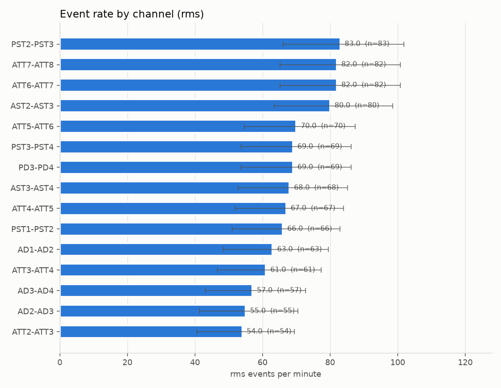
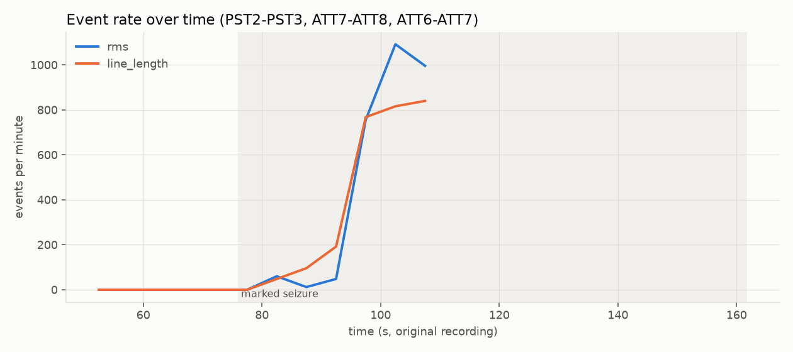
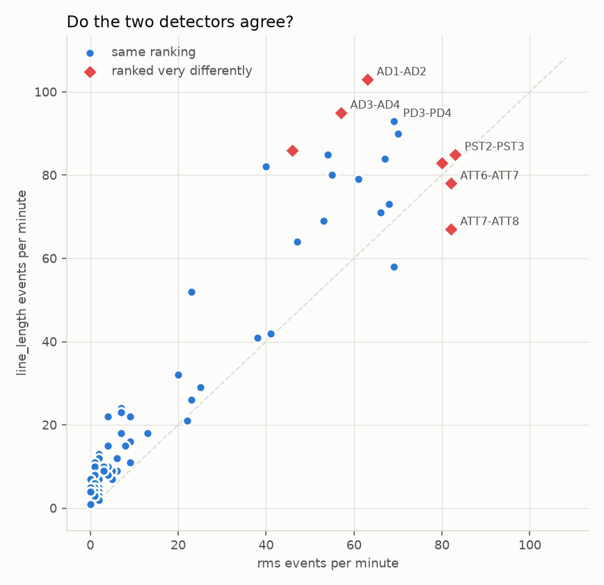

Onset-HFO
Detecting high-frequency oscillations (ripples, 80–250 Hz) and interictal epileptiform discharges in public intracranial EEG — with an evidence-only agent on an open-weight model that can read the results, must cite them, and is refused by code when it strays.
New to intracranial EEG? Start here
From iEEG to evidence — the Onset project's illustrated tutorial. It explains what these recordings are, what a ripple and an interictal discharge look like, how evidence is built from them, and why a detector's output is not a diagnosis. Worked examples throughout, and an optional lab on putting an open-weight model in front of the results.
Already know the vocabulary? Skip to the notebooks below.
Run it, right now, with no setup
Five notebooks, each opening straight into Google Colab. Notebook 1 downloads 24 MB of real recording and notebook 5 about 480 MB (twenty patients); the rest need no download at all.
Notebook 1
HFO detection quickstart
One minute of real intracranial EEG → filtering → two detectors → figures → a report that cites the signal window behind every number.
Open in Colab →Notebook 2
Agentic analysis
An open-weight model answering questions about those results — with citations, refusals, and a guard that catches an invented number in the act.
Open in Colab →Notebook 3
Validation and benchmark
Precision and recall against known truth, the threshold curve, and what each rejection criterion actually buys.
Open in Colab →Notebook 4
Orchestration and localization
The model choosing what to measure rather than only reading it, a learned per-contact model, conformal prediction sets, and a suite built to break all of it.
Open in Colab →Notebook 5
Surgical outcome study
The one test whose reference standard is not another algorithm: did the HFO map point at the tissue whose removal cured the patient? Also the notebook that shows a headline result weakening when the analysis window grows — and why that matters more than the result.
Open in Colab →Or locally, in about two minutes:
git clone https://github.com/berdakh/onset-hfo.git
cd onset-hfo/onset-hfo
pip install -e ".[dev]"
python -m onset_hfo.cli run --synthetic --figures # offline, ~10 seconds
python -m onset_hfo.cli run --subject sub-pt01 --start 50 --stop 110
python -m onset_agent.cli --results artifacts/results/sub-pt01_ictal_run-01 --demo
python -m onset_hfo.cli outcome # the outcome study
pytest -q # 236 tests, offlineWhat one detection looks like
This is the figure that makes a detection arguable: the wideband signal, the band-passed signal, and the event's spectrum against the recording's own 1/f background. A real oscillation leaves a bump above that dashed line. Filter ringing — what a sharp transient becomes after an 80–250 Hz filter — does not, and that difference is what the pipeline measures for every event.

sub-pt01, detected by the line-length detector.How it works
- Data. Two public CC0 archives.
ds003029— multicentre iEEG with clinician seizure markers, used for the ictal quickstart.ds003498— Zurich interictal sleep at 2000 Hz, which ships expert HFO markings, the resected contacts and surgical outcome, and is what every measured number above rests on. The loader asks each archive for a byte range, so a notebook downloads 24 MB instead of 105 MB. - Preprocessing. 1 Hz high-pass, narrow mains notches (the 180 and 240 Hz harmonics sit inside the ripple band), bipolar montage.
- Two HFO detectors that differ only in the feature they threshold — RMS energy (Staba 2002) and line length (Gardner 2007) — so a disagreement between them is attributable to the feature, not to two implementations drifting apart. Plus an interictal-discharge detector.
- Artifact rejection on each event's spectrum. This is where filter ringing is removed, and it is what the precision below rests on.
- A report with rates, Poisson intervals, evidence windows, and the disagreements stated rather than averaged away. There is no recommendation field — not empty, absent.
What it measures
Against surgical outcome
Twenty patients, the whole interictal-sleep run each (300 s), the resected
contacts read from the archive's clinical sheet and seizure outcome from
participants.tsv. The question: was the channel generating the
most fast ripples inside the tissue the surgeon removed?
| HFO source | Seizure-free (n=13) | Recurrence (n=7) | AUC (95% CI) | p |
|---|---|---|---|---|
| Expert markings | 11 / 13 | 3 / 7 | 0.71 (0.50–0.92) | 0.12 |
| Our RMS detector | 10 / 13 | 3 / 7 | 0.67 (0.45–0.89) | 0.17 |
The direction is the one Fedele et al. 2017 predicts — the study this dataset comes from — and with 13 patients against 7 it does not reach significance. This cohort can only detect AUC ≥ 0.85 at 80% power, so it could not have established either number. Nothing in the study reaches p < 0.05.
The most useful result is that an earlier version of this table said something stronger. On the first 60 seconds of the same recordings — same code, same pre-specified metric — the expert arm gave AUC 0.82, p = 0.007, and that is what this page claimed until the study was re-run on the full recording. Two patients account for the whole difference. A conclusion that changes between minute one and minutes one-to-five is not yet a measurement, and channel-ranking stability across windows is now the most concrete open problem in the project. Both tables, side by side, are in the outcome document.
Against expert markings
The same 20 subjects, scored event by event — 41,187 marked events, counted only on the channels the annotators actually reviewed:
| Band | Threshold | Precision | Recall | F1 | Channel-rank ρ |
|---|---|---|---|---|---|
| ripple | 1.5 SD | 0.43 | 0.48 | 0.42 | 0.59 |
| ripple | 2.0 SD | 0.51 | 0.38 | 0.40 | 0.66 |
| fast ripple | 3.5 SD | 0.33 | 0.29 | 0.30 | 0.59 |
| fast ripple | 5.0 SD | 0.54 | 0.20 | 0.26 | 0.61 |
| fast ripple | 2.0 SD | 0.09 | 0.53 | 0.15 | 0.44 |
That is agreement, not accuracy. The reference is the validated output of another detector, not a census of every oscillation, so an event we find that it never proposed counts against us whether or not it is real. The defensible sentence: we reproduce about half of a published detector's validated events, and rank the same channels as active at ρ ≈ 0.66.
The same benchmark showed that this pipeline's own default threshold — 5 robust SDs, inherited from the ictal literature — finds only 12% of interictal markings and ranks channels barely above chance. The measured operating point is 1.5–2.0 SD, and it now ships as a named preset. A default nobody had measured was quietly wrong for the clinically relevant setting; catching that is what this project is for.
The two bands also want different operating points, by a factor of two and a half: ripples rank best at 2.0 SD, fast ripples at 5.0 SD. Running the ripple value in the fast-ripple band drops precision from 0.54 to 0.09, and flattened the outcome arm above when it was first run that way. One threshold for both bands is a bug, not a simplification.
On synthetic data with known truth (three recordings, 60 s each, implanted ripples, discharges and artifacts):
| Detector | Precision | Recall | F1 |
|---|---|---|---|
| RMS energy (ripples) | 0.956 ± 0.017 | 0.528 ± 0.073 | 0.679 |
| Line length (ripples) | 0.957 ± 0.017 | 0.550 ± 0.078 | 0.697 |
| Interictal discharges | 0.998 ± 0.004 | 0.844 ± 0.037 | 0.914 |
Artifact rejection is what earns that precision: before it, the energy detector scores 0.63 — nearly all of its false positives are large transients ringing through the band-pass — and after it, 0.97, for about one point of recall.


Two results reported rather than smoothed over
The ranking does not match the clinician's markers. The top-ranked channels overlap the contacts named at seizure onset no more than chance predicts (permutation p = 0.68–0.71). That is expected for a 60-second ictal window and a rate-only ranking — and it is the clearest statement that nothing here identifies a seizure-onset zone.
One of the rejection criteria barely earns its place. An ablation shows the spectral-peak check does nearly all the work; the cycle-count check almost never fires. Both are kept, and the table is published so nobody has to take that on trust.
The two detectors also match only about half of each other's individual events (Jaccard 0.53) and rank seven leading channels very differently. The report names those channels. A single-detector rate table is less certain than it looks.

The agent
A language model is good at deciding what to look up in a detection table and how to say it, and perfectly capable of writing a rate that was never measured. So the split is: the model chooses the questions and the phrasing, the pipeline decides what is true, and a checker proves it for every answer.
- Eight read-only tools over one saved analysis. No tool runs a detector, writes a file, or takes a patient argument.
- Treatment, diagnosis and other-patient questions are refused before the model runs — there is no model in the path to be persuaded.
- After every answer: each citation must resolve to a window a tool returned, and each number must appear in a tool result. Otherwise the answer is discarded and the agent declines.
- Backends: Ollama, any OpenAI-compatible server,
transformersin-process (Qwen2.5 by default), and a scripted policy so the whole loop runs offline with no model at all.
problems: ["citation 'sub-xx|MADE-UP|rms|0.000' was never returned by a tool",
"the value '999.9 /min' does not appear in any tool result"]Notebook 2 runs a deliberately lying model so you can watch the guard fire.
Documentation
New to the vocabulary — ictal, bipolar montage, ripple band? The glossary defines every term used on this page, and the tutorial covers the clinical context from the beginning.
What this must not be used for
Not a medical device. Not validated on patients. Not a diagnosis, and not a seizure-onset-zone finder — a high event rate is a measurement, and physiological ripples occur in healthy tissue.
The detector numbers above are agreement with another detector's validated output, not accuracy, on 60 seconds per patient from one centre. The outcome study is a retrospective series of twenty patients — 13 against 7 — which can only detect a very large effect, and in which nothing survives correction for its 36 comparisons. Reproducing a retrospective finding is evidence that the analysis is sound, not that the clinical claim is. The full list should be read before quoting any number on this page to anyone.